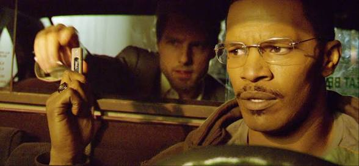

🎷 🌃 🚕 COLLATERAL (2004) — CERTIFIED MGC XF-45

⚖ MGC Lower Court Docket
- ASSET TITLE: Collateral (2004) – The Nocturnal Los Angeles Cab-Shift & Hitman Ledger
- OFFICIAL REGISTRY GRADE: Certified MGC XF-45 (Extremely Fine / Top-Tier Circulated Thriller Specimen)
- LOWER COURT JURISDICTION: Lower Tribunal Room / 2000s Neo-Noir Crime Docket
- CASE FILE: #079
- PRESIDING PANEL: Judge Dex, Chief of R&D, Chief Grader MGC, and Chief Justice MGC
📜 THE FORENSIC NARRATIVE BREAKDOWN & LUSTER LOG
Under the strict 5x numismatic magnifying lens, Michael Mann’s 2004 nocturnal Los Angeles thriller delivers sharp two-hander tension—anchored by Tom Cruise’s ice-cold, silver-haired hitman discipline, Jamie Foxx’s grounded cabbie vulnerability, and the iconic “Yo homie, that my briefcase?” alley draw. However, stripping away 2004 legacy hype and examining fresh modern viewing metrics (including its original “B” CinemaScore) exposes severe third-act contrivances, police-subplot drag, and sudden character transformation that block any crossover into the AU vault and cap the coin at the XF-45 wine-glass ceiling:
🚨 The Three Specific Structural & Tactical Planchet Flaws:
1. The Third-Act “Annie Coincidence” & Metro Shootout Contrivance (Structural Planchet Fracture)
- Out of 10 million people in Los Angeles County, Vincent’s final contract target just happens to be Annie—the exact federal prosecutor Max gave a ride to at the start of his shift—culminating in a convenient subway-train power outage and glass-door shootout. Sliding the 5x lens across the final twenty minutes reveals heavy Hollywood screenwriting shortcuts that collapse two acts of street-level realism into pure action-movie luck.
2. Max’s Sudden Combat-Driver & Tactical Evolution (Character Calibration Scuff)
- For nearly 90 minutes, Max is established as a timid, conflict-avoidant daydreamer who freezes under pressure—yet in the third act, he abruptly transforms into a fearless stunt driver who intentionally flips his cab at high speed and outguns a seasoned, Tier-1 contract killer in the dark, introducing noticeable behavioral friction across the coin’s finish.
3. The Uncalibrated Fever-Nightclub & LAPD Subplot Drag (Pacing & Tactical Wear)
- Mark Ruffalo’s LAPD detective subplot spends half the movie piecing together clues only to walk straight into a chaotic, strobe-lit nightclub firefight where dozens of cartel gunmen, FBI agents, and hitmen miss point-blank shots before Vincent casually walks out. Combined with early-2000s low-light digital video noise that shows its age on modern screens, the bloated sequence leaves circulated handling wear across the middle register.
⚖ The Final Judicial Decree
- With all three structural, character, and pacing blemishes permanently locked on the record, 2004 legacy hype is officially stripped away. While Tom Cruise’s ice-cold hitman discipline, Jamie Foxx’s grounded first-two-acts cabbie work, and the nocturnal Los Angeles atmosphere claim the top ceiling of the wine-glass register, the contrived third-act Annie coincidence, sudden rookie-to-gunfighter transformation, and bloated nightclub firefight prevent any crossover into the AU vault.
- Permanently sealed in the archives as a Certified MGC XF-45 Choice Circulated Specimen. Case #079 is officially closed. 🍷🎷🌃🚕🔨

• © 2026 MOVIE GRADING CONSENSUS. All Sovereign Rights Reserved.